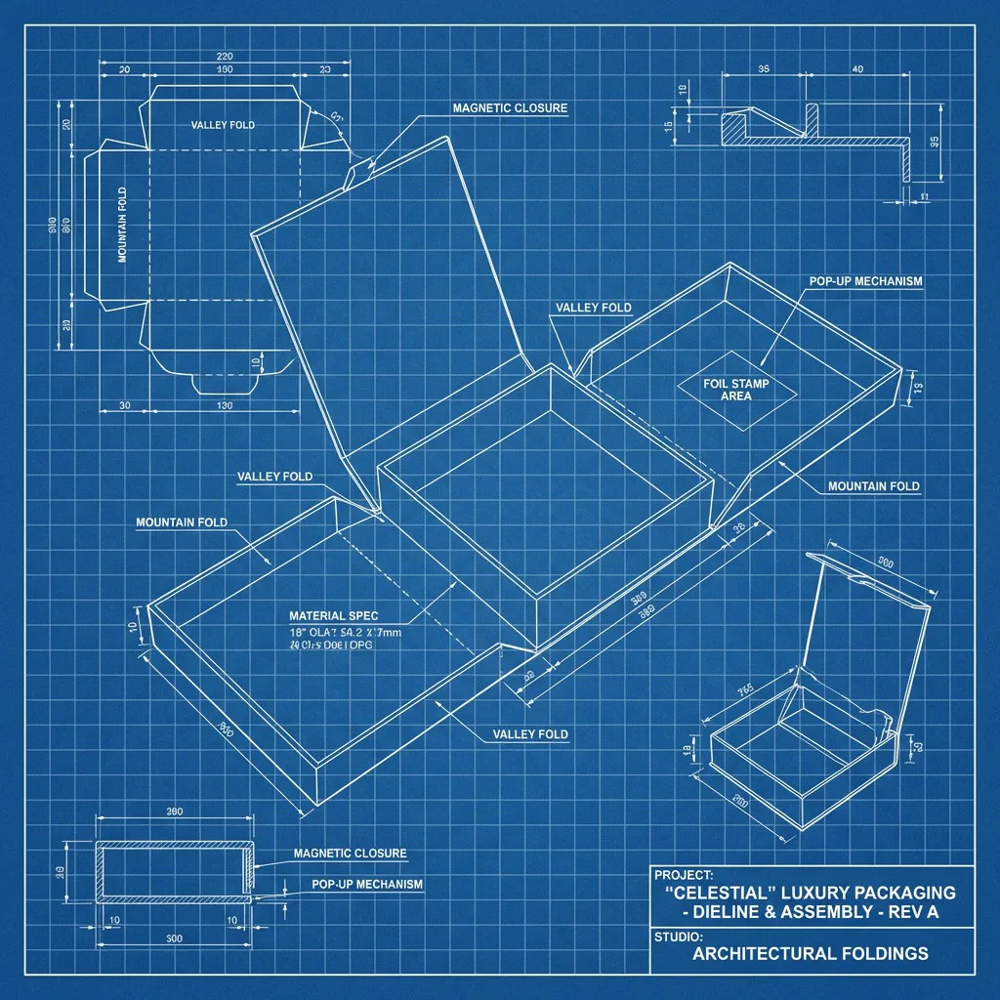

Short answer
Nominal bottle volume does not define an insert.
A production-ready perfume box insert starts with the maximum fully assembled and filled bottle envelope by SKU, component variation, stable support zones, pump and cap no-contact space, protected surfaces, intended orientation, retention and removal, accessory layout, outer shipping configuration, acceptance criteria, representative testing, inspection, and revision control.
The custom perfume box page handles product development and quotation. This guide handles the technical brief. It does not prescribe a universal clearance, certify an insert material, determine dangerous-goods classification, approve a shipping pack, or replace production-equivalent samples and qualified evaluation.
Free planning tool
Perfume bottle insert fit planner.
Compare a rectangular bottle planning envelope with a proposed insert cavity. Enter maximum fully assembled dimensions and your own planning allowances in millimetres.
Calculator boundary: this is a rectangular dimensional screen, not an insert drawing, dieline, finished box dimension, retention or release specification, material selection, cost, MOQ, drop-test result, dangerous-goods classification, or production approval. It does not model bottle curves, center of mass, glass variation, pump travel, cap fit, insert compression, recovery, contact pressure, seams, lining, adhesive, loading path, removal force, box tolerance, or shipping hazards.
Reddit demand signals
Heavy bottles expose the weak part of a beautiful pack.
Community questions reveal buyer language and failure modes. They do not establish material strength, clearance, component quality, test approval, supplier performance, or transport compliance.
Will a folding carton protect a heavy bottle and cap?
A recent buyer compared a compact tuck box with a rigid presentation format for a filled perfume bottle and heavy cap. Convert that decision into total loaded mass, base closure, insert load path, top assembly clearance, outer shipper, physical sample, and route-specific evidence—not a board-weight shortcut. Read the packaging question.
A cap can scuff—or even operate—the spray head
A fragrance discussion described a visibly scuffed cap and an alternate cap that pressed the nozzle. The report is not a universal component failure, but it shows why the cap interior, pump travel, fitted height, no-contact zone, bottle movement, closing, impact, and replacement sequence belong in the brief. Review the packaging experience.
Brands ask whether bulk bottles match samples
A 2026 sourcing thread asks about leaks, spray performance, label accuracy, MOQ, shipping damage, delays, and final-versus-sample quality. Separate the bottle, pump, cap, decoration, secondary box, insert, outer carton, acceptance record, and change notification so one approved appearance sample is not mistaken for complete release evidence. See the fragrance sourcing discussion.
Bottle master
Freeze the complete assembled SKU before the cavity.
The box supplier needs the actual extremes and component relationships—not only nominal millilitres or one unfilled glass sample.
| Control | Record | Why it matters |
|---|---|---|
| Maximum envelope | Length, width, assembled height, base, body, shoulder, neck, pump, collar, cap, projections, tolerances, and measuring condition. | Planning space, insert profile, top clearance, loading route, shared structures, inspection method, and change control. |
| Loaded product | Filled mass, liquid fill, center-of-mass concern, orientation, leak indicators, closure state, and component retention. | Base load path, restraint, handling, closure, shipper mass, representative sample, and product acceptance criteria. |
| Surface map | Display face, coated or printed glass, label edges, metallized collar, cap finish, seams, fragile decoration, and permitted or forbidden contact. | Insert material, covered edges, contact pressure, movement limit, fiber or rub review, grip, and removal path. |
| Gift-set map | Full-size bottle, travel spray, refill, lotion, accessory, leaflet, tray sequence, SKU combinations, and substitution rule. | Separate cavities, glass-to-glass isolation, component migration, first-removal action, identification, carton assortment, and kitting. |
Load and no-contact map
Carry the bottle below the functional top assembly.
Document how the filled mass reaches the insert and box base. Use only approved surfaces to locate the bottle, and keep the pump, spray head, cap and sensitive decoration clear of unintended loads.
- Define stable base or lower-body bearing regions and any areas that cannot carry load
- Use approved body or shoulder zones for location without concentrating pressure on glass decoration or label edges
- Map pump travel, collar, cap interior, cap fit variation, lid intrusion and insert movement as one top-clearance problem
- Separate bottles, caps, accessories and hard cut edges so movement cannot create glass contact or visible rub
- Check upright, horizontal, inverted and intermediate handling positions stated in the actual pack-out

Insert and customer action
Retention and removal must work together.
A cavity can appear secure but still scrape a decorated face, grip the cap, require unsafe finger pressure, or release an accessory during opening.
Folded platforms and neck locators
Control grain, folds, locking tabs, cut edges, seam position, support under load, recovery after insertion, bottle access, assembly direction, and whether a top locator transfers force into the neck or cap.
Molded pulp or formed fiber
Review cavity profile, draft, rib and wall locations, fiber surface, dust, moisture response, nested storage, production variation, decorated-surface contact, and release from a shaped cavity.
EVA, EPE, fabric or paper wrap
Specify grade or density, thickness, lamination, visible edge, odor, color, compression and recovery, adhesive, covering seams, rub and transfer risk, removal access, and applicable material requirements.
- Insert the productRecord direction, force, component state, cap orientation, accessory order, line speed, rework rule, and what operators may touch.
- Open the packConfirm the lid, drawer, tuck, ribbon, tray or leaflet cannot catch the cap, pump, label or decoration.
- Remove the bottleProvide body grip, finger wells, side access, lift ribbon or removable tray so users do not pull only the cap or spray assembly.
- Replace and recloseCheck repeat fit, cap clearance, insert damage, surface marks, accessory movement and pack closure where reuse is part of the experience.
Compare packaging insert materials · Review custom insert development
Gift sets and SKU control
Treat every approved component combination as a configuration.
A shared outside box does not make different bottles, caps, pumps and accessories interchangeable inside it.
Give every component a controlled ID
Link bottle, pump, collar, cap, label, insert, box, artwork, accessory and packing instruction revisions to each sellable SKU.
Stop migration and hard contact
Provide a defined cavity or restraint for travel sprays, refills, tools, leaflets and loose caps so they cannot reach the main bottle.
Approve loading and first removal
Map which item is packed first, what remains visible, which product is removed first, hand access, replacement and reclosure.
Control assortment and counts
Define gift-set configuration, insert revision, barcode, carton assortment, quantity, overrun, shortage, quarantine and final count evidence.
Outer pack and distribution
Test the filled product and complete pack together.
ISTA describes 3-Series procedures as general simulations of damage-producing transport motions, forces, conditions and sequences. Select the current procedure from the actual package and route, not from this page.
| Gate | Define before approval | Evidence to retain |
|---|---|---|
| Presentation sample | Production-equivalent filled components, support, movement, no-contact zones, removal, surfaces, opening, dimensions, mass, and workmanship. | Sample IDs, bottle and component revisions, measured results, annotated photos, deviations, signed disposition, and retained reference. |
| Outer shipper | Units per case, orientation, dividers, cushioning, surface separation, void control, closure, gross mass, outside dimensions, labels, parcel or pallet route, and mixed-SKU rule. | Pack drawing, work instruction, loading photos, component specifications, measured carton data, and released revision. |
| Acceptance criteria | Breakage, leakage, pump operation, cap movement, label or decoration damage, insert release, box deformation, scuff, opening, and allowed package degradation. | Predeclared pass/fail definitions, test reference and level, conditioning, samples, sequence, deviations, report, corrective action, and retest. |
| Production and field | Incoming components, in-process fit, pack-out audit, carton counts, leak response, route, season, returns, warehouse and customer observations. | Lot traceability, inspection record, shipment sample, event photos, root cause, corrective action, validation, and change notice. |
Transport compliance boundary: perfume and fragrance products can require dangerous-goods classification and controls depending on their composition, quantity, packaging, mode, route, carrier and current rules. IATA states that correct dangerous-goods classification is the shipper's responsibility. Obtain current classification, packing, marking, labeling, documentation and carrier instructions from qualified parties; this secondary-packaging guide does not make that determination.
Review ISTA's current test-procedure categories · Review IATA dangerous-goods classification guidance · Build the master-carton brief
Approval gates
Release function before decorating bulk production.
A screen proof or empty bottle fit is not evidence for the filled, capped, packed and shipped configuration.
- Freeze the mastersApprove bottle, liquid state, pump, collar, cap, label, decoration, accessories, dimensions, tolerances, mass, surface map and substitution rules.
- Prove the white sampleReview support, cavity, insert assembly, no-contact zone, loading, movement, removal, closure, outside dimensions and shipper before decorative tooling.
- Approve the decorated sampleCheck artwork, color, finish, contact, rub, fiber transfer, odor, opening, reclosure, identification and product presentation with the real components.
- Release the distribution packFreeze units per case, orientation, separation, closure, measured mass and dimensions, markings, route, acceptance criteria, test reference and report responsibility.
- Control production changesDefine sampling, critical dimensions, component revision, fit audit, visual limits, leak response, carton counts, retained evidence and written change approval.
Comparable RFQ
Send every supplier the same controlled configuration.
Use one CSV row per bottle or gift-set configuration, then attach component drawings, photos, artwork, route data, sample and evaluation requirements.
- Product setBottle and component IDs, maximum dimensions, tolerances, filled weight, pump and cap, surface map, orientation, accessories, physical samples, and units per set.
- Insert and boxSupport and no-contact map, material route, removal, structure, opening sequence, print and finish, artwork version, quantity by configuration, and workmanship targets.
- Production evidenceDieline, white sample, decorated sample, loaded sample, critical-dimension record, fit and removal record, inspection plan, retained samples, and change control.
- Distribution scopeUnits per carton, separation and cushioning, orientation, closure, gross mass, outside dimensions, route, destination, acceptance criteria, test scope, classification owner, and documentation responsibility.
- Commercial boundaryTooling, setup, MOQ by configuration, sample and test cost, unit price, overrun or underrun, packing, Incoterm and named place, freight scope, lead-time basis, taxes, duty, and quote validity.
Buyer questions
Perfume box insert FAQ.
Final clearance, support, material, removal, shipper and testing depend on the released filled bottle and actual route.